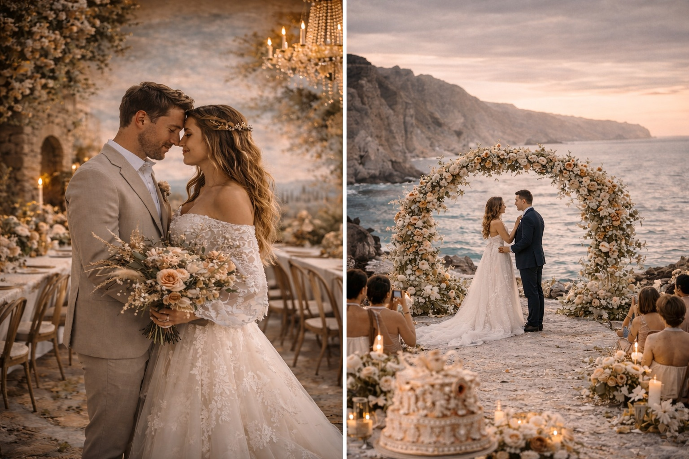

March 2026Hidden Gems & Bold Twists for 2026 Couples
In 2026, the UK wedding scene is all about intentional rebellion: ditching cookie-cutter for deeply personal, boundary-pushing choices that feel like you wrote the script. From Vogue and Hitched reports to real planner insights, couples are leaning into unusual locations, art-like details, and experiences that surprise guests (in the best way). Here’s a curated selection of fresh, unique ideas emerging right now—perfect for March inspiration when fairs are buzzing and spring light is magic.
“Let’s do something no one else has.”
1. Scenic Walls Over Flower Walls (Architectural Drama)
Forget temporary draping or hedges—couples are choosing permanent-feeling scenic walls as anchors. Think painted or textured backdrops mimicking European villas, Old Hollywood stages, historic estates, or modern galleries.
They ground the room like architecture, photograph stunningly, and let the design feel editorial and bespoke. Unique twist: Customise it with subtle nods to your story (e.g., a mural of your first date spot).
Venues with blank walls or historic features shine here—budget-friendly yet high-impact.
2. Linen Placemats as the New Statement Layer
Tablescapes get a fresh anchor: oversized or textured linen placemats in unexpected colours or patterns.
They’re the “draperies” of tabletops—adding lush personality, tying the room together, and offering a pop that’s more interesting than standard runners.
Pair with bold jewel tones or retro-modern cakes for maximalist vibes without overwhelming the space.
3. “Deliberately Messy” After-Parties & Immersive Transitions
The day doesn’t end politely—couples are designing messy, joyful after-parties with interactive surprises: glitter bars, temporary tattoos, live illustrators sketching guests, cocktail-crafting stations, or rehearsed flash dances.
Transitions surprise too: mid-afternoon ceremonies shift to festival-like evenings with secret reveals (e.g., hidden bars or immersive entertainment).
It’s about movement and real connection—guests leave talking about the energy, not just the look.
4. Unconventional Venues & “Wow” Locations
Dramatic, unusual spots are rising: old stone quarries, ancient ruins, secret gardens, or UK “destination” feels in Cornwall, Highlands, or Lake District (no passport needed).
With freer ceremony laws evolving, outdoor/beach/woodland vows in unexpected places feel magical.
Bridgerton-inspired stately homes continue strong, but twist it modern—blend Regency romance with bold contemporary styling.
5. Artful, Non-Traditional Florals & Non-Floral “Bouquets”
Florals go sculptural and unexpected: unusual blooms, wild grasses, foraged elements, dried details, pearl strands, vintage brooches, or fabric/lace “bouquets” that blur floristry and fashion.
Texture rules—crystals, beads, ribbons woven in. Statement installations at ceremonies feel like living art.
6. Retro/Statement Cakes & Unconventional Food Moments
Ditch plain tiers: retro-inspired cakes (vibrant, textured) or bold food experiences (interactive dining, unexpected styling).
Guests remember the surprise of a cake cutting with a story behind it.